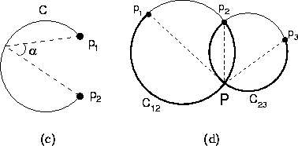
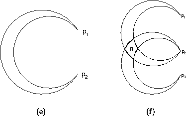

Triangulation methods for robot localisation are based on traditional methods in cartography and navigation, which use the angles or bearings measured between the lines of sight to known landmarks in the environment. There is a long history of research on these methods in the domains of cartography, surveying, photogrammetry and computational geometry. Triangulation approaches in the domain of mobile robotics rarely involve real-world implementation, allowing the researcher to ignore the problems of landmark detection and recognition, which are often issues that are domain- and sensor-dependent.

Figure 2.1: Pose constraints given
bearings to (a) two landmarks, and (b) three landmarks.
It is apparent that given only the angle measured between two distinguishable landmarks, the pose of the observer is constrained to the arc of a circle, as shown in Figure 2.1(a). In the case where there are three landmarks, the pose is constrained to a single point, lying at the intersection of two circles (Figure 2.1(b)), provided that no two landmarks are coincident. When there are four or more landmarks, the system is overdetermined, or may have no solution [54, 33]. This result provides a basis for several localisation solutions under a variety of conditions. For instance, Sugihara provides a consideration of the problem of localisation when the observed landmarks are indistinguishable [54]. That work seeks out a computationally efficient method for finding a consistent correspondence between detected landmarks and points in a map. This correspondence method is improved upon by Avis and Imai [2]. Both of these works rely heavily on the reliable extraction of landmarks from sensor data and the accuracy of the bearing measurements - only minor consideration is given to the problem of using uncertain bearings.
Sutherland and Thompson approach triangulation methods from the perspective that the landmark correspondence problem has been solved, but the bearings to observed landmarks cannot be precisely known [55]. It is shown that informed selection of the set of landmarks to be used in the map can help to minimise the area of uncertainty, that is, the area in which the robot may self-locate for any given error range in visual angle measure. Figure 2.2 shows the area of uncertainty computed for a bounded error range in the cases of a) two and b) three observed landmarks. Sutherland and Thompson demonstrate that the size of the area of uncertainty can vary significantly for different configurations of landmarks. The goal of their work is to select landmarks whose configurations minimise the area of uncertainty.

Figure 2.2: Pose constraints given
uncertain bearings to (a) two landmarks, and (b) three landmarks.
Betke and Gurvits have also considered the problem of localisation from uncertain bearings. They are concerned primarily with the efficient computation of a position estimate from an overdetermined set of bearings [8]. They derive a complex-domain representation of the positions of the landmarks that linearises the relationship between the constraining equations and allows the system to be solved in time linear in the number of landmarks, provided that certain constraints on the formation of the landmarks are met.
All of the triangulation methods considered here make a strict set of assumptions about the environment and the robot. In every case, the robot is provided with an accurate a priori map of the positions of known landmarks, and in some cases assumes the ability to uniquely distinguish between the observed landmarks. In addition, the robot can always reliably detect landmarks in the sensor data. An important aspect of these solutions is the observation that sensor measurements are not always accurate, and hence it is most reasonable to seek out a solution which minimises the uncertainty of the position estimate.